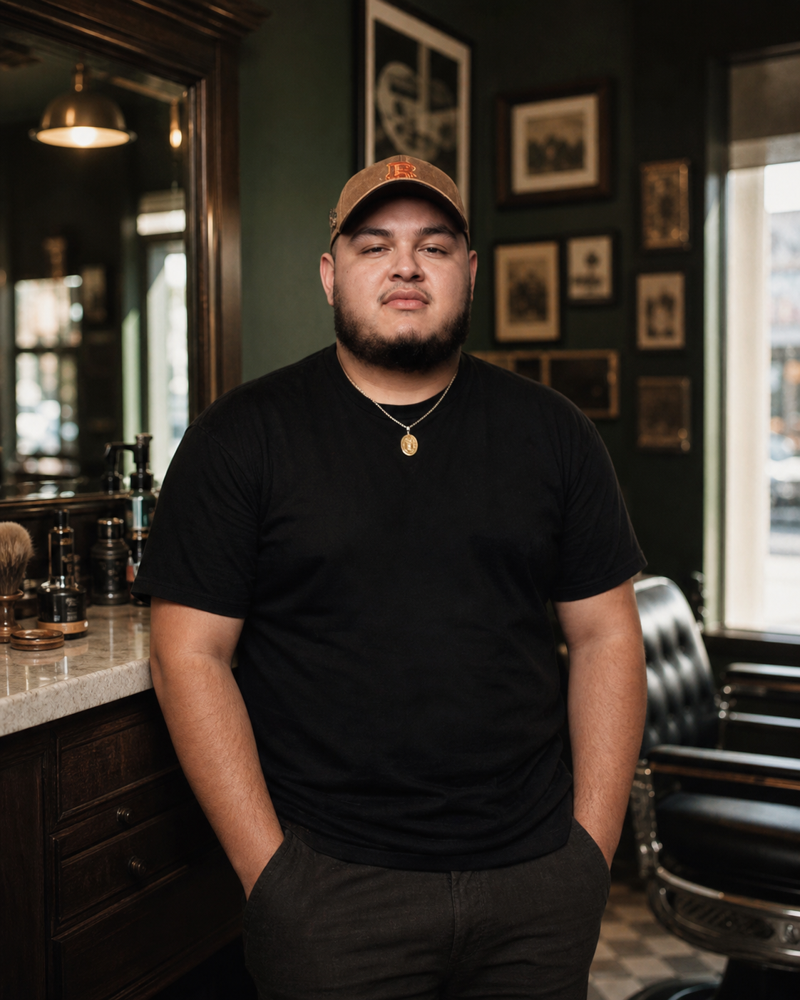
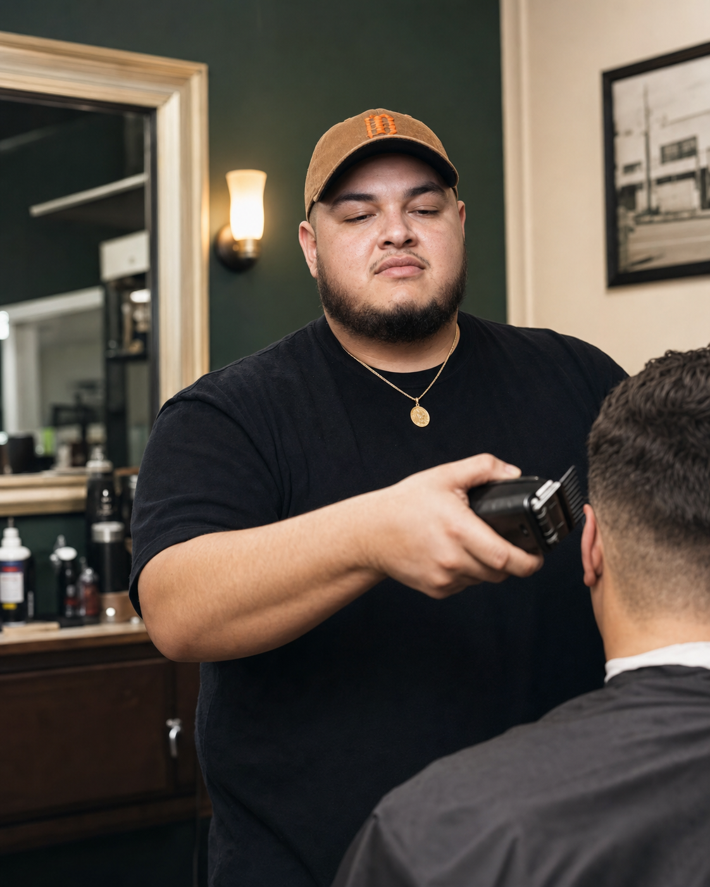
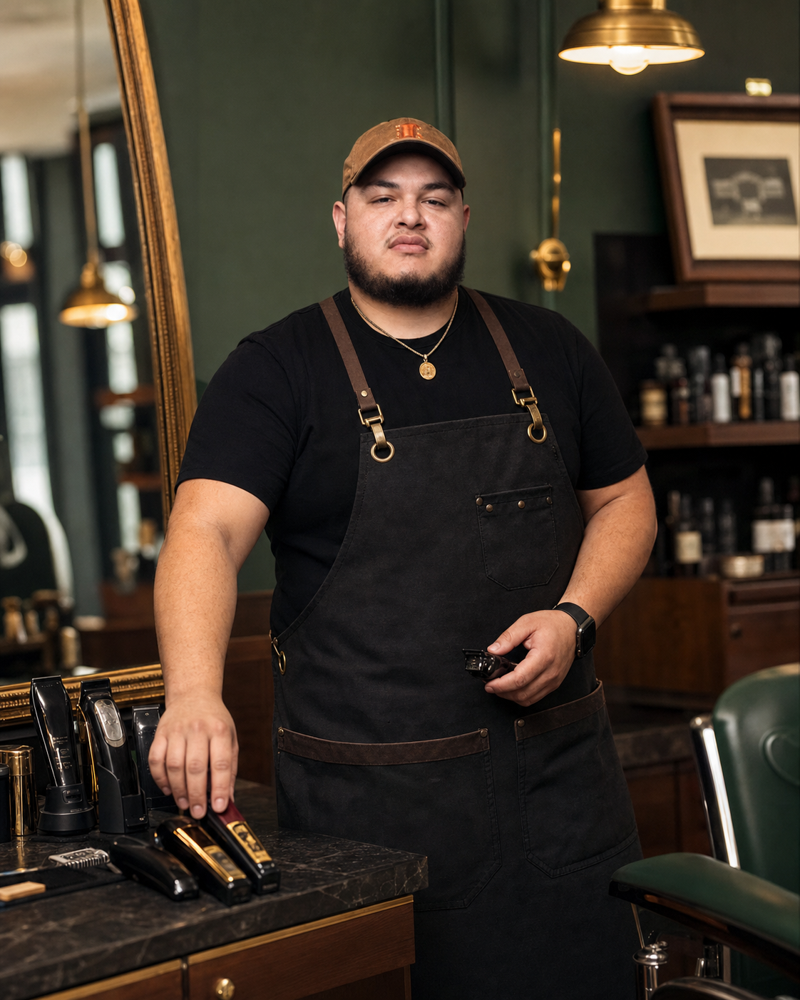

Licensed 12+ years
Greg
Solario
Owner of Tenth Street Barber Co. A hands-on neighborhood barber focused on steady work, good people, and a shop that feels local.



Appointments
Licensed 12+ years
Owner of Tenth Street Barber Co. A hands-on neighborhood barber focused on steady work, good people, and a shop that feels local.



Appointments